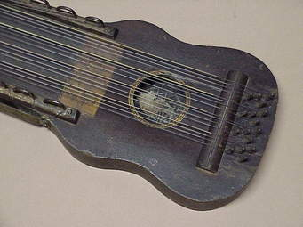
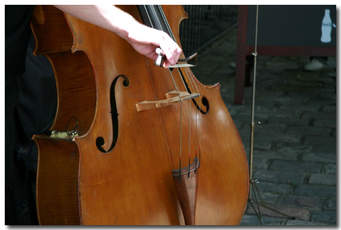

Types of music which are available.
Different music instruments available.
Connect with us for music updates.
 Music is an art form, and cultural activity, whose medium is sound. General definitions of music include common elements such as
pitch (which governs melody and harmony), rhythm (and its associated concepts tempo, meter, and articulation),
dynamics (loudness and softness), and the sonic qualities of timbre and texture
(which are sometimes termed the "color" of a musical sound).
Different styles or types of music may emphasize, de-emphasize or omit some of these elements.
Music is performed with a vast range of instruments and vocal techniques ranging from singing to rapping; there are solely
instrumental pieces, solely vocal pieces (such as songs without instrumental accompaniment) and pieces that combine singing and instruments.